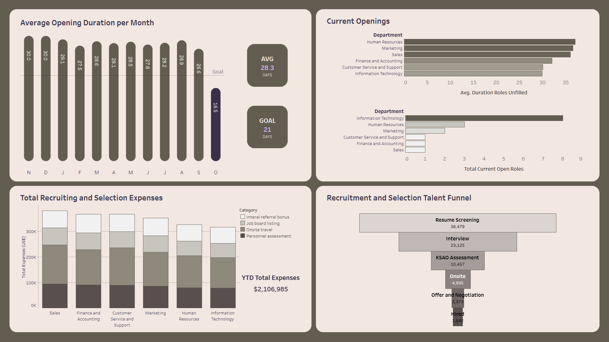

Selection System Dashboard
Tableau dashboard visualizing selection system stats within a large organization from a simulated data set

- Context — 3 tables of data including information about openings within an organization, information about applicants to these openings, and records of expenses associated with hiring for each opening
- Problem — Given these data, how well are the current selection strategies working within the organization and are there any areas for potential improvement regarding the duration of roles remaining unfilled and the costs associated with selecting talent to fill open roles?
- Importance — Effective selection is essential for organizational performance, but is often resource-intensive. Long-term success requires balancing selection system effectiveness and effeciency, and identifying potential bottlenecks and other areas of improvement within a selection system is crucial.
- Recommendations — Assuming these data were not simulated, the dashboard would demonstrate some insights for future directions.
- Continue encouraging recent changes — With the exception of Branch G, and especially Branch C, most branches have struggled to meet goals for filling roles until October 2023. If a new system was implemented to help branches achieve this goal, then continue monitoring the implementation and success of the strategy. If a new strategy was not implemented, then assessing whether the improvement in goal achievement occured because of external factors (e.g., market characteristics) or internal factors (e.g., new approach to recruiting or changes in benefits offered) could be beneficial in identifying what drove the change and can inform how to sustain the improved goal achievement
- Assess IT department — The organization has a signficant portion of open roles in the information technology department. If the department was recently expanded, this is expected, but if not, then it could benefit the organization to identify why so many roles have recently opened in IT and why they are not being filled.
- Streamline early selection strategies — On-site travel and assessment fees could be reduced within overall recruiting and selection expenses by increasing the screening criteria in resume screening and interviews. The ideal threshold would depend largely on balancing the cost versus benefits of false negatives, and would depend largely on the minimal qualifications of the specific role being filled.
Links to project files
Project Overview
With this project, I wanted to specifically focus on making dashboards in Tableau. I simulated data for the visualizations with Python and then used Excel to explore the data and to create PivotTables to verify the validity of the visualizations and aggregations generated within Tableau. I also used this project as a chance to challenge myself to stick to a branded color palette and explore creating a dashboard with complex styling and a more advanced layout.